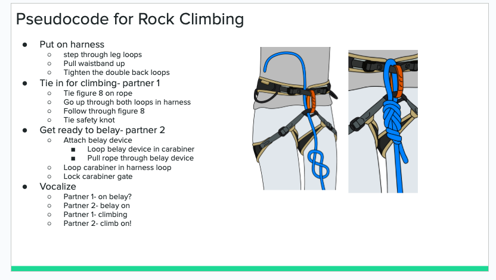

Lab 4 - Psedocode and Problem solving
Challenge
We needed to pseudocode a thing that most people dont know how to do and pseducode a game to play on the computer, we chose rock-paper-scissors.
Problems
I had a hard time understanding the commenting aspect of js.
Reflection
Me and my partner called andd figured out how to work through all the lab tasks and were able to be productive in finishing all we needed to do for this lab.
Results
Rock Climbing- Tieing in

Pseudocode Rock, Paper, Scissors
Pseducode of Rock, Paper, Scissors
// Rock Paper Scissors
// An implementaion of the game
// Ask player if they want to play a game of rock paper scissors
// Start the game loop
// Prompt them for imput of rock, paper, or scissors
// 0=rock, 1=paper, 2=scissors
// Comparre user imput to random generated
// Text the win or draw conditions
// Ask player if they want to play again
// If yes= restart game loop
// if no= end game loop
// Anantya Engineer
// April 2023